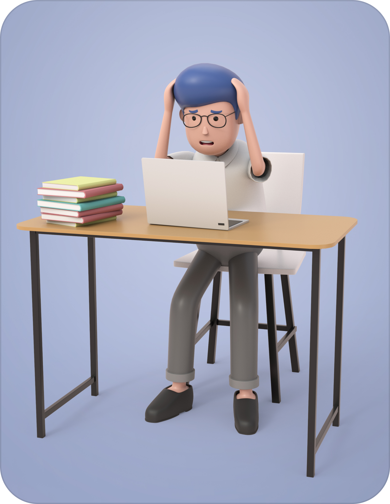

Dampak Negatif Terlalu Overwork
Dalam dunia yang semakin kompetitif dan sibuk, banyak orang cenderung merasa perlu untuk bekerja keras, bahkan melebihi batas kewajaran. Praktik ini, yang dikenal sebagai overworking atau bekerja terlalu keras, bisa membawa dampak serius pada kesehatan mental seseorang. Dalam artikel ini, kita akan membahas dampak-dampak yang mungkin terjadi akibat terlalu banyak bekerja pada kesehatan mental.
1. Stres yang Berlebihan
Overworking dapat menyebabkan tingkat stres yang tinggi. Bekerja terus-menerus, terutama jika Anda mengabaikan waktu istirahat dan liburan, dapat menyebabkan tubuh Anda berada dalam keadaan terus-menerus "fight or flight". Ini dapat mengakibatkan peningkatan kadar hormon stres seperti kortisol dalam tubuh, yang pada gilirannya dapat merusak kesehatan mental.
2. Kecemasan dan Depresi
Terlalu banyak kerja juga dapat berkontribusi pada timbulnya kecemasan dan depresi. Ketika Anda terlalu sibuk untuk merasa bahagia atau merasa puas dengan hidup Anda, Anda berisiko mengalami perasaan cemas atau depresi. Kehilangan keseimbangan antara hidup pribadi dan profesional dapat mempengaruhi perasaan Anda secara keseluruhan.
3. Gangguan Tidur
Kesehatan mental sangat terkait dengan kualitas tidur. Overworking seringkali mengganggu pola tidur seseorang. Orang yang terlalu sibuk sering merasa sulit untuk tidur karena pikiran mereka terus menerus terfokus pada pekerjaan. Kualitas tidur yang buruk dapat memperburuk masalah kesehatan mental.
4. Isolasi Sosial
Bekerja terlalu keras dapat membuat seseorang terisolasi secara sosial. Ketika seseorang tidak memiliki waktu untuk berkumpul dengan teman-teman atau keluarga, hal ini dapat mengarah pada perasaan kesepian dan isolasi sosial. Hubungan sosial yang kuat penting untuk kesehatan mental yang baik.
5. Penurunan Produktivitas dan Kreativitas
Paradoksnya, terlalu banyak bekerja bisa mengakibatkan penurunan produktivitas dan kreativitas. Ketika seseorang terus-menerus ditekan oleh pekerjaan, mereka mungkin merasa terjebak dalam rutinitas yang monoton, yang dapat menghambat kreativitas dan inovasi.
Mengatasi Overworking untuk Kesehatan Mental yang Lebih Baik
Untuk menjaga kesehatan mental yang baik, sangat penting untuk mengenali tanda-tanda overworking dan mengambil langkah-langkah untuk mengatasi masalah ini. Ini termasuk mengatur batas waktu kerja yang sehat, menjaga keseimbangan antara pekerjaan dan hidup pribadi, merencanakan waktu untuk istirahat dan rekreasi, serta mencari dukungan dari teman, keluarga, atau seorang profesional kesehatan mental jika diperlukan.
Penting untuk diingat bahwa kesehatan mental adalah aspek penting dari kesejahteraan kita. Terlalu banyak bekerja bukanlah tanda produktivitas yang tinggi, tetapi justru dapat merugikan kesehatan mental dan fisik kita. Jadi, mari jaga keseimbangan dalam hidup kita dan berikan diri kita waktu yang cukup untuk istirahat dan bersantai.